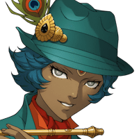

ティリス
魔神を倒したからイザボーたちの世界と 繋がったのかも！？
ティリス
でも、このゲート、凄く不安定みたい……。 急がないと消えちゃうかも。
イザボー
でも、アサヒちゃんやノゾミさんも 待たないと！
ティリス
カルくん、それにみんなも！ どうしてこっちに？
カル
俺たちはそれぞれ別の魔神を倒したんだけど そこでもゲートが現れたんだ。
グラデンス
じゃが、その時にこちらから強大な 魔神の力を感じての。
グラデンス
心配になってそれぞれこちらに 向かったということじゃ。
アサヒ
ノゾミさんたちとはここに着く 直前に出会ったんです。
ティリス
今はゆっくり話してる場合じゃ ないんだってば～！
アサヒ
え、ちょ、ちょっと！ もっとみんなとちゃんとお別れさせて！
アサヒ
セリアさん、カルくん、グラデンスさん、 Shou-chan、
アサヒ
短い間だったけど、 みんなに会えたことあたし、忘れません！
アサヒ
みんなと一緒に戦えたこと、 戻ったら幼馴染に自慢しますね♪
ノゾミ
カルくん、セリア、グラデンスさん、 Shou-chan、
ノゾミ
あなたたちとグランガイアで 出会えたこと、
イザボー
Shou-chan、 私はあなたのことが心配。
イザボー
でも、あなたの意志がどこに向かうかが 私はまだ見えない。
イザボー
力を持つ者の意志は 世界に大きな影響を与える。
イザボー
だから私はこれからのあなたの未来が 楽しみでもあり不安でもあるの。
イザボー
あなたとShou-chanの絆があれば、
イザボー
間違った未来へと進むことはないと 私は信じていますわ。
ティリス
うん、私とShou-chanなら 絶対に大丈夫だよ！
ティリス
だから、イザボーも早くフリンを 助けてあげてね！
イザボー
そして、私もフリンと必ず 新たな未来を築いてみせます！
イザボー
Shou-chan、ティリス、 あなたたちと出会えて本当によかった。
イザボー
この世界に来られたこと、 あなたたちの世界の神に感謝しますわ。
カル
絶望的な状況にも関わらず 希望を持って戦い続ける……。
グラデンス
さて、これで任務完了じゃな。 ワシらもエルガイアに帰るとするかの。
ナバール
３人とも待ちたまえ！ 誰かを忘れてやしないか！
ナバール
Shou-chan君か！ 私の依頼を完遂してくれたこと感謝する！
ナバール
君が何かのトラブルで私の世界に来た時は いつでも私を頼りたまえ。
ナバール
そこのゲート、まだ閉じるなよ！ 私も元の世界に帰るのだからなー！
セリア
なんだったの今の？ 人…ではなかったようだけど……。
セリア
Shou-chan、 アンタ、知り合いなの？
セリア
変な知り合いができるのは アンタらしいと言えばアンタらしいけど。
カル
ま、まあ、あの３人とも 知り合いみたいだし、
グラデンス
ま、まあなんじゃ。 とりあえずShou-chanよ。
グラデンス
お主はイザボー殿と話したことを しっかりと覚えておくのだぞ。
グラデンス
お前の言動により 世界は変わっていくのじゃからな。


クリシュナ
やはりそううまくはいかないか。
クリシュナ
シェーシャの力を使い、邪魔な連中を 異世界に飛ばしてはみたが
クリシュナ
向こうには向こうの都合があるんだろうね。
クリシュナ
こちらはこちらで本番の準備を進めよう。 じきに月が宙に満ちる……救済の時は近い。